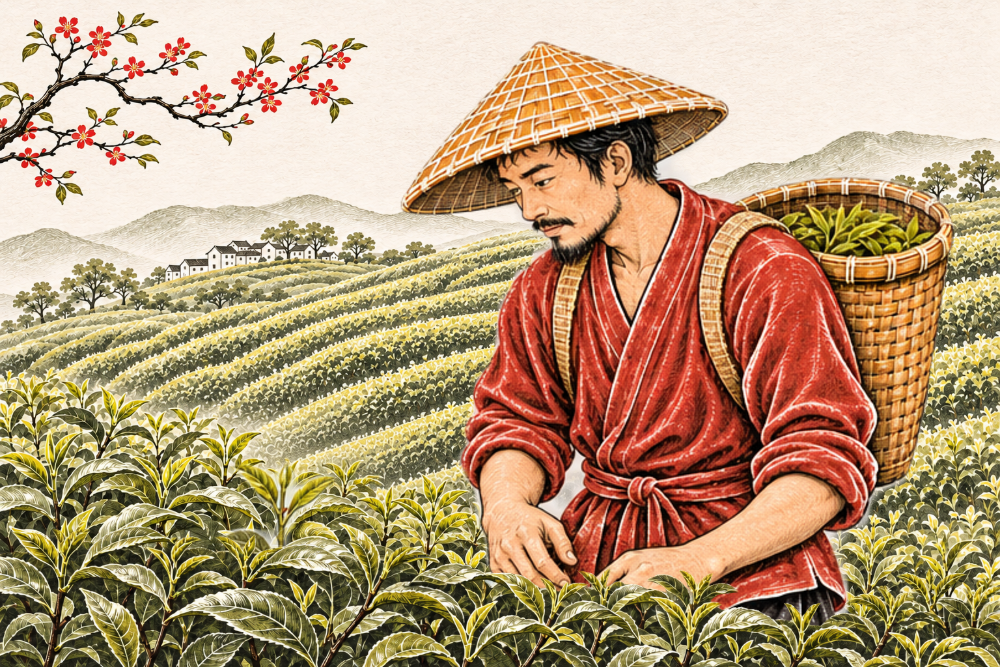

山间的一盏茶 · 第一段
采一枚新芽
从枝头，到背篓，看见一盏茶的开头。听看故事 · 约 14 秒

嫩芽还在枝头从一枚新芽，走近一盏茶的来处。
正在展开画面与旁白…
点选四个时刻，可以单独听看这一段。
先听看一个完整的小故事；也可以选择“亲手采叶”。
一片叶，已经收好了。看看它接下来的路：炒制、分装、入杯 ↗
原创纸墨故事 · MiniMax 旁白 · 可暂停、回看与重听
山间的一盏茶 · 第一段

嫩芽还在枝头正在展开画面与旁白…
点选四个时刻，可以单独听看这一段。
先听看一个完整的小故事；也可以选择“亲手采叶”。
原创纸墨故事 · MiniMax 旁白 · 可暂停、回看与重听